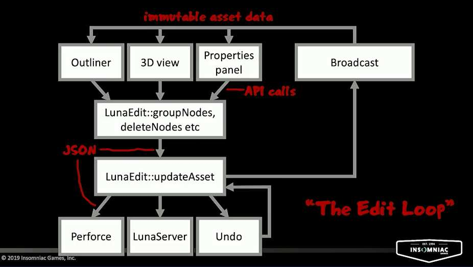

Notes for "Tools for 'Marvel's Spider-Man' Editing with Immutable Data" GDC2019
TLDW Summary: This talk is a tour of the technologies that Insomniac Games developed to transition from their web based tools to their new desktop tools. Highlighting what challenges they encountered when replacing the tool chain in mid production.
Keywords
- Data Design
- Immutable Data
- Mid Production
- Data Definition Language (DDL)
- Porting
Presentation Time Stamps
- at min 1 Background
- at min 2 Making Changes
- at min 6 Mission Directive
- at min 15 Implicitly shared data with Copy-on-write
- at min 29 Immutable Data
- at min 32 The Edit Loop
- at min 41 Hazards Encountered
- at min 45 Conclusion
- at min 47 Q&A
Background
- Insomniac Games started to develop Web-Based Tools in 2010 (written in JavaScript)
- This lead to some issues and the engine team decided to go back to the regular desktop tools
- for more see GDC 2017 “Insomniac’s Web Tools: A Postmortem”
- Insomniac Games shipped 6 games with the web tools
- This lead to some issues and the engine team decided to go back to the regular desktop tools
- This talk is about what happened after the “Insomniac’s Web Tools: A Postmortem”
Making Changes
timestamp: 2 min into the presentation
- In 2015 the work started on the transition from JavaScript to C++ Qt with a 4 man team
- The refactoring had to be done while the tools were still in use
- Sunset Overdrive pushed the JS world editor to its limits and ‘Marvel’s Spider-Man’ Manhattan would be even bigger
- the team needed to port 12 editors from JS
- the goals of the refactoring were
- performance (being able to work with large data sets)
- multi-threading support
- easier to maintain
- type safety (JS “Uncaught TypeError: undefined is not a function”)
- performance (being able to work with large data sets)
Mission Directive
timestamp: 6 min into the presentation
- the tool porting was planned to be done when a significant part of the content would have been created with the old tools
- needed to provide an upgrade path or data compatibility
- the C++ tools need to have the same UX and UI as the JS tools to make the switching between the tools as seamless as possible.
- no feature requests were accepted to make it possible to finish on time
- The tools were 100% data compatible
- this enabled the users to fall back to the JS tools when they hit an issue with the C++ version
- the JS tools were using a local client/server model
- the local server was called LunaServer
- for more check out the GDC2012 talk about Developing Imperfect Software: How to Prepare for Development Pipeline Failure
- LunaServer
- stores its state in MongoDB
- responsible for file system IO
- responsible for Perforce operations
- sync changes to assets between tools
- the local server was called LunaServer
- their own in-house DDL
- made JSON type safe with a DDL compiler (ToolsDDL) that would compile the DDL into C++ code (set/get)
- tools use in memory JSON representation (to reduce complexity and the need to convert between C++ object)modification
- to represent a game object, they use JSON trees which are the same as hash table of hash tables
Implicitly shared data with Copy-on-write
timestamp: 15 min into the presentation
- a detailed explanation of the Implicitly shared data with Copy-on-write pattern at @ 15-36
- basic idea
- a global state is implicitly shared between modules
- when a module wants to update the global state, a copy is made
- after the modification is done the rest of the modules get notified to fetch the pointer to the new object
- implicit sharing makes it easy to compute the diff of 2 JSON trees
- this is because as soon as 2 subtrees point to the same shared subtree, you don’t need to traverse that part of the tree any further.
Immutable Data
timestamp: 29 min into the presentation
- the same idea of Implicitly shared data without Copy-on-write
- no setters
- this makes it easier to reason about the code
- they like to think about this as a step towards functional programming
- designing an API that is like a function that returns a new value based on the old value
- without any
- side effects
- preconditions
- without any
The Edit Loop
timestamp: 32 min into the presentation
- LunaEdit is the module that is responsible for editing asset
- creating a new object from an object that was passed in
- LunaEdit is also responsible for
- handling Perforce checkout
- handling the undo system
- sending updates to the LunaServer (updating the DB and files on disk)
- broadcast changes all of the modules in the system (change/update)
- all of the complexity of working with the data format is hidden in one place - the LunaEdit module
- 
Hazards Encountered
timestamp: 41 min into the presentation
- copying wide (flat) hash tables is expensive
- prefer deep hash tables
- don’t use QJsonObject
- strings are stored as 8-bit and returned as 16-bit
- strings are not shared (issue with identical keys)
- with multiple versions of data in flight
- a module wants to change a piece of data that is in the process of being updated.
- this wasn’t an issue because the main thread is the only thread that can request a change
These notes are just the main ideas of the talk. They don’t contain anecdotes and examples. If you want to learn more, I would advise watching the talk on the GDC Vault.
The Toolsmiths

I took these notes as part of our little “Book Club” for GDC Vault Videos The Toolsmiths #vault club
Join us on Slack.
Join us on Twitter.